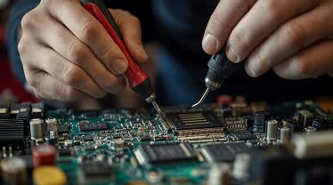

Not every problem is a broken part. Crashes, blue screens, endless pop-ups, a browser that hijacks every search, or a machine that takes five minutes to reach the desktop are software faults, and replacing hardware will not fix any of them.
I remove malware and adware, repair corrupted Windows and macOS installations, resolve driver and update conflicts, rescue machines stuck in boot loops, and clear out the startup clutter that builds up over years. Your files stay where they are, backed up before I start.
I find the actual cause instead of reinstalling everything by default. A full reinstall is the last resort, not the opening move, and your data is backed up before any of it begins.
Full malware, driver, and system file scan to separate infection from misconfiguration.
Threats removed, system files repaired, and conflicting drivers or updates rolled back cleanly.
Updates applied, startup cleaned, and protection configured so the same problem does not return.
I back up before I touch anything, work on a copy wherever possible, and never wipe a machine without telling you first. You get the device back with your files, accounts, and settings intact.
Most infections arrive through outdated software and bad habits rather than bad luck. I leave you with updates configured, protection in place, and a short list of what to avoid.

Years of experience
Devices Repaired
Customer satisfaction
Brands serviced
No. I take a full backup before starting, and a reinstall only happens with your explicit approval.
Pop-ups, a hijacked browser, unknown programs at startup, sudden slowdowns, or disabled antivirus are the usual signs.
Usually yes. Boot failures are often corrupted system files or a bad update rather than dead hardware.
Only when repair is not viable. If it comes to that, I migrate your files and reinstall your applications afterwards.
Most cleanups are finished within 24 hours. Heavily infected systems can take a little longer.